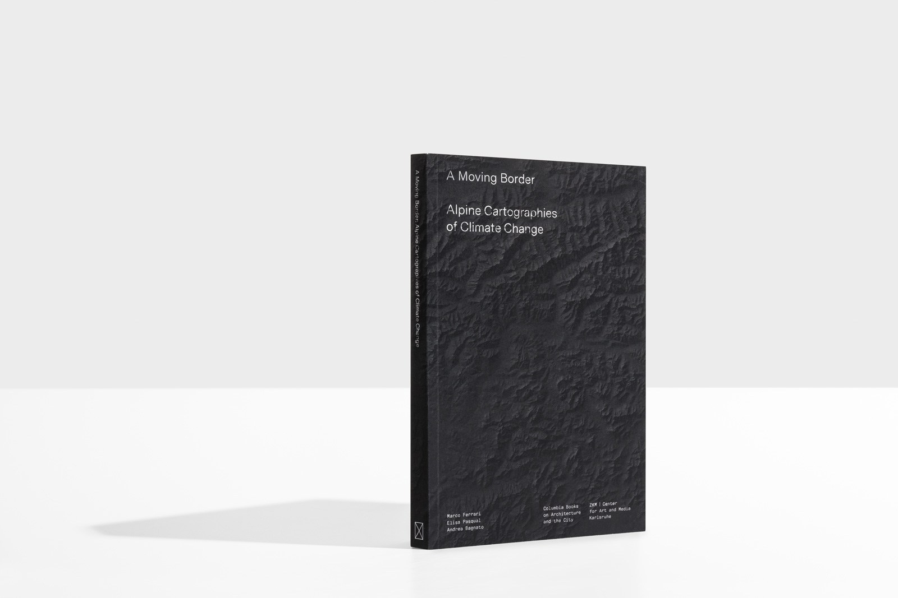
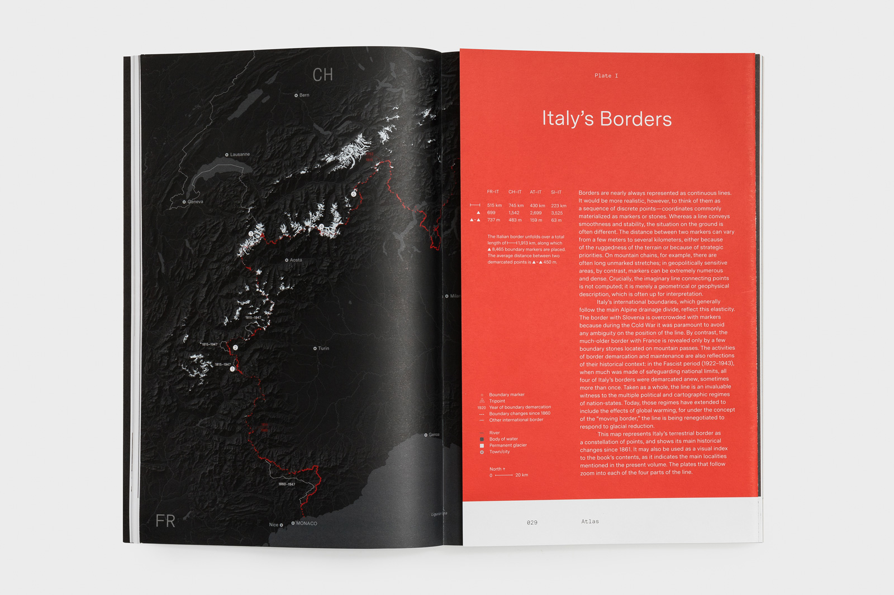
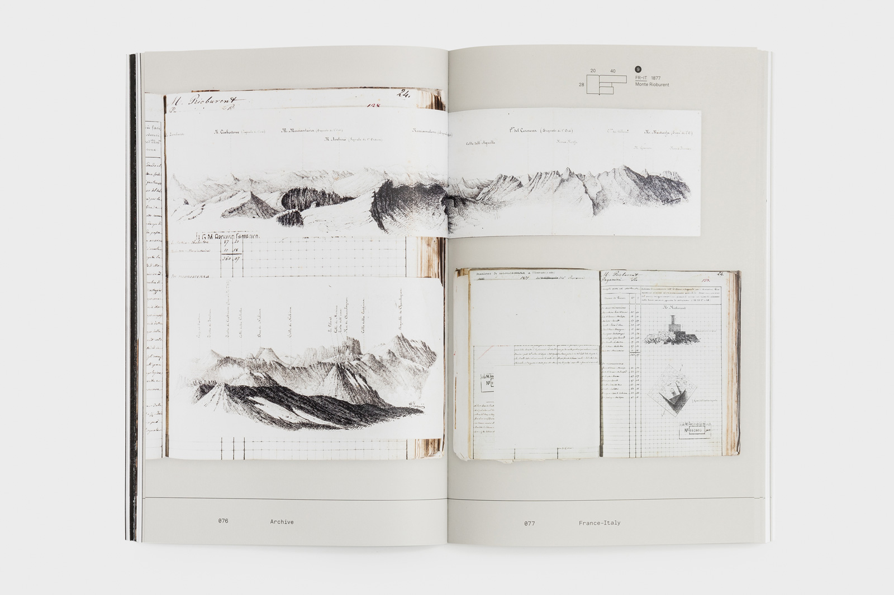
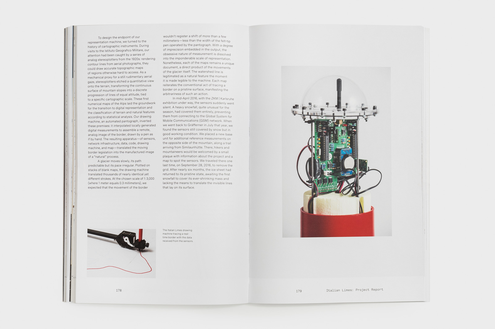
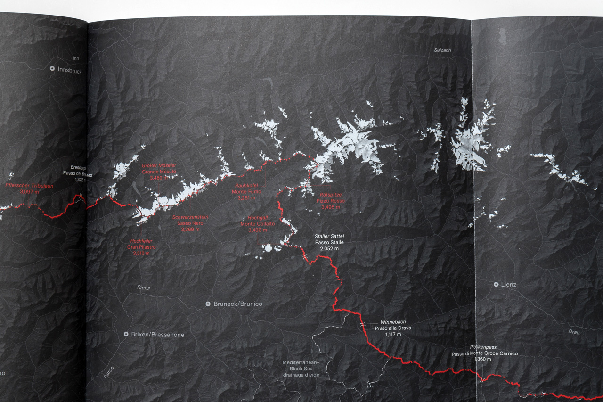
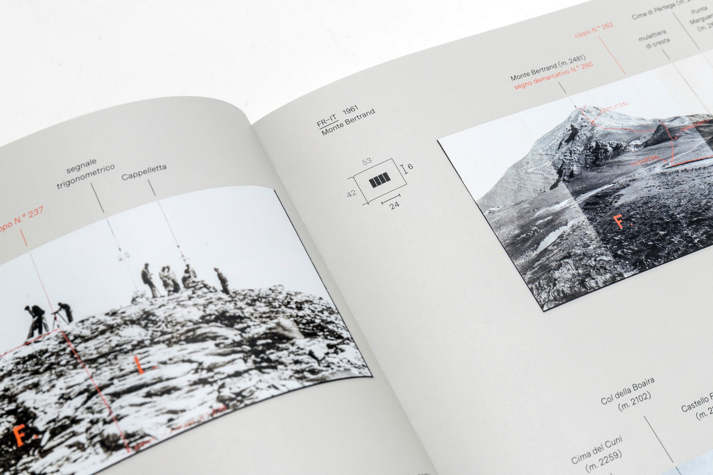

A Moving Border: Alpine Cartographies of Climate Change charts the effects of global warming on political limits, and questions the adequacy of current cartographies to represent natural change. Locating the Italian condition alongside a longer political history of boundary making, the book examines the nexus of nation-building and cartography through critical essays, maps, and unpublished documents from state archives. It shows how natural borders are the product of spatial and historical narratives—and hints at the challenges that global warming poses to Western conceptions of territory.
Authors
Marco Ferrari, Elisa Pasqual, Andrea Bagnato
Contributors
Stuart Elden, Mia Fuller, Francesca Hughes, Bruno Latour, Wu Ming 1
Design and Visualizations
Studio Folder (Marco Ferrari, Elisa Pasqual, Pietro Leoni, Simone Trotti)
Photography
Delfino Sisto Legnani, Gaia Cambiaggi
Format
Paperback, 228 pages, 19x29 cm (7.4x9.4 in)
Published by
Columbia Books on Architecture and the City, New York
ZKM | Center for Art and Media, Karlsruhe
Supported by
Graham Foundation
Columbia University Press
(North America)
Book Depository
(Italy and worldwide)
Amazon
(UK)
The book will be progressively available from more retailers starting from April 2019. Please check back on this page for updates.

April 15, 2019
Book launch: Andrea Bagnato and Marco Ferrari in conversation with Stuart Elden, Isabelle Kirkham–Lewitt, Susan Schuppli
Royal Academy, London UK
April 12, 2019
Book launch: the authors in conversation with Paola Antonelli, Joseph Grima, Isabelle Kirkham–Lewitt
La Triennale di Milano, IT
March 21, 2019
Book launch: the authors in conversation with Vivian Ziherl
Het Nieuwe Instituut, Rotterdam NL
July 27, 2018
Roundtable with Wu Ming 1 and Bruno Arpaia at Alta Felicità Festival
Val di Susa, Italy
June 2, 2018
Roundtable with Wu Ming 1 at Alpinismo Molotov Festival
Monti Sibillini, Italy
December 1, 2017
Project presentation at the Territory, Law and the Anthropocene Workshop
University of Warwick, UK
November 29, 2017
Project presentation with Associazione Proletari Escursionisti
Piano Terra, Milan




